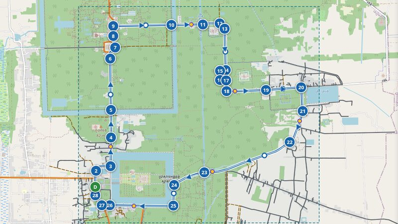
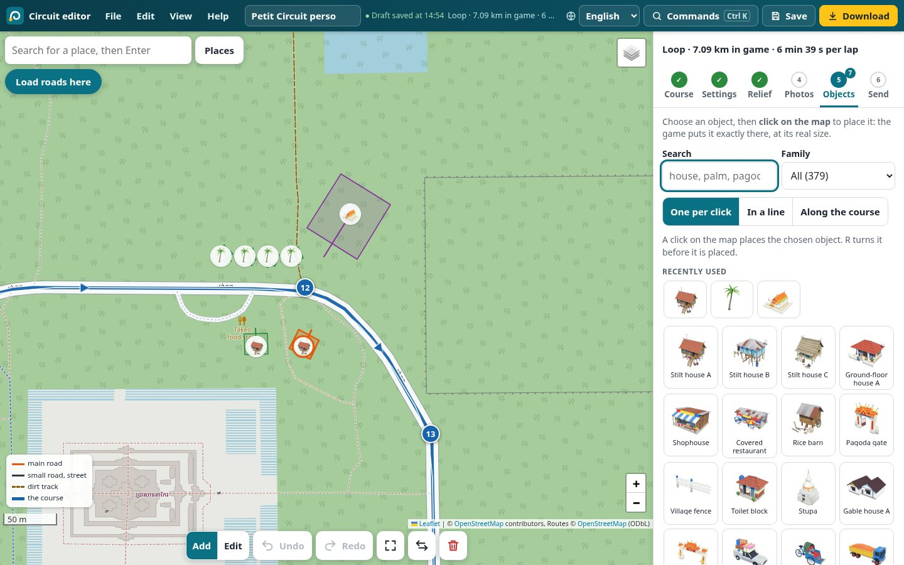
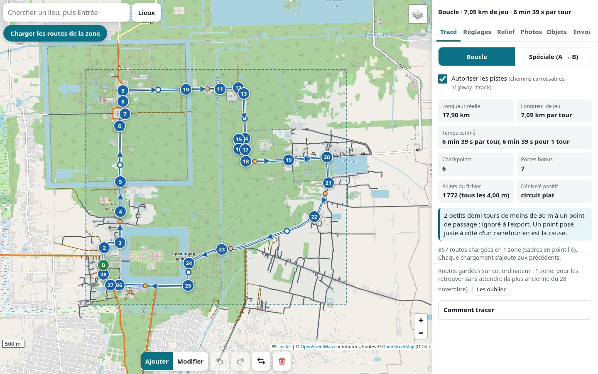

Circuit editorÉditeur de circuitsកម្មវិធីគូរសៀគ្វី
Every version of this page since 28 Nov 2026, newest first: what changed, and the captures and videos as the page showed them at the time.
Chaque version de cette page depuis le 28 nov. 2026, de la plus récente à la plus ancienne : ce qui a changé, et les captures et vidéos telles que la page les montrait à l’époque.
គ្រប់កំណែនៃទំព័រនេះ តាំងពីថ្ងៃទី 28 វិច្ឆិកា 2026 ពីថ្មីបំផុតទៅចាស់៖ អ្វីដែលបានផ្លាស់ប្តូរ និងរូបថតអេក្រង់ និងវីដេអូ ដូចដែលទំព័របានបង្ហាញនៅពេលនោះ។
Nothing on this page has been regenerated: every capture and video is the file the site published at the time, recovered from its Git history. What the site never published is not here. Since 21 November 2026, every change to the project page adds a version here, and the captures, videos and Last changes it replaces are kept.Rien sur cette page n’a été régénéré : chaque capture et chaque vidéo est le fichier que le site publiait à l’époque, retrouvé dans son historique Git. Ce que le site n’a jamais publié n’y figure pas. Depuis le 21 novembre 2026, chaque changement de la page du projet ajoute ici une version, et les captures, vidéos et derniers changements qu’il remplace sont conservés.គ្មានអ្វីនៅលើទំព័រនេះត្រូវបានបង្កើតឡើងវិញទេ៖ រូបថតអេក្រង់ និងវីដេអូនីមួយៗ គឺជាឯកសារដែលគេហទំព័របានផ្សាយនៅពេលនោះ ដែលបានយកមកវិញពីប្រវត្តិ Git របស់វា។ អ្វីដែលគេហទំព័រមិនដែលផ្សាយ មិនមាននៅទីនេះទេ។ តាំងពីថ្ងៃទី 21 ខែវិច្ឆិកា ឆ្នាំ 2026 ការផ្លាស់ប្តូរនីមួយៗនៃទំព័រគម្រោង បន្ថែមកំណែមួយនៅទីនេះ ហើយរូបថតអេក្រង់ វីដេអូ និងការផ្លាស់ប្តូរចុងក្រោយ ដែលវាជំនួស ត្រូវបានរក្សាទុក។
From the latest to the first.De la plus récente à la première.ពីកំណែចុងក្រោយ ដល់កំណែដំបូង។
-
Its own presentation pageSa page de présentationទំព័របង្ហាញផ្ទាល់ខ្លួន
The circuit editor gets a page of its own, in English, French and Khmer, in the In development section: drawing a circuit on OpenStreetMap’s roads for 3D Buggy, what a circuit carries (relief, the real place’s scenery, photos, the game’s 379 objects), what is kept on the computer, where it stands and how it is built, with Last changes running to 28 November 2026. Three captures of the published editor with the Petit Circuit of Angkor show its screens.
L’éditeur de circuits reçoit sa propre page, en anglais, en français et en khmer, dans la section En développement : dessiner un circuit sur les routes d’OpenStreetMap pour 3D Buggy, ce que porte un circuit (relief, décor du lieu réel, photos, les 379 objets du jeu), ce qui est gardé sur l’ordinateur, où il en est et comment il est construit, avec des Derniers changements qui vont jusqu’au 28 novembre 2026. Trois captures de l’éditeur publié, avec le Petit Circuit d’Angkor, montrent ses écrans.
កម្មវិធីគូរសៀគ្វី ទទួលបានទំព័រផ្ទាល់ខ្លួន ជាភាសាអង់គ្លេស បារាំង និងខ្មែរ នៅក្នុងផ្នែកកំពុងអភិវឌ្ឍ៖ ការគូរសៀគ្វីលើផ្លូវរបស់ OpenStreetMap សម្រាប់ 3D Buggy អ្វីដែលសៀគ្វីមួយផ្ទុក (កម្ពស់ដី ទេសភាពនៃទីកន្លែងពិត រូបថត វត្ថុ 379 របស់ហ្គេម) អ្វីដែលរក្សាទុកលើកុំព្យូទ័រ ស្ថានភាពបច្ចុប្បន្ន និងរបៀបដែលវាត្រូវបានបង្កើត ជាមួយការផ្លាស់ប្តូរចុងក្រោយរហូតដល់ថ្ងៃទី 28 ខែវិច្ឆិកា ឆ្នាំ 2026។ រូបថតអេក្រង់បីនៃកម្មវិធីគូរដែលបានផ្សព្វផ្សាយ ជាមួយ Petit Circuit នៃអង្គរ បង្ហាញអេក្រង់របស់វា។
4 captures4 capturesរូបថតអេក្រង់ 4
On the pageSur la pageនៅលើទំព័រ 
On the pageSur la pageនៅលើទំព័រ 
On the pageSur la pageនៅលើទំព័រ 
On the pageSur la pageនៅលើទំព័រ